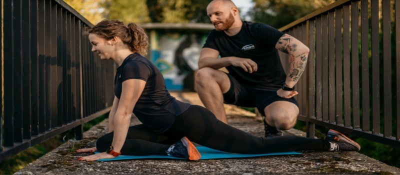

BENEFITS OF FLEXIBILITY
Some people are naturally more flexible. Flexibility is primarily due to one's genetics, gender, age, body shape and level of physical activity. As people grow older, they tend to lose flexibility, usually as a result of inactivity, but partially because of the aging process itself. The less active you are, the less flexible you are likely to be. As with cardiovascular endurance and muscle strength, flexibility will improve with regular training.